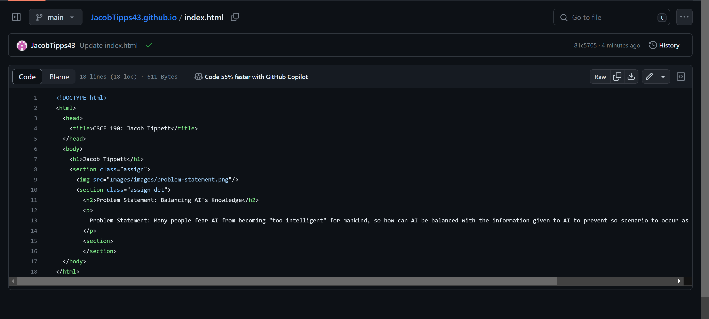

Problem Statement: Many people fear AI from becoming "too intelligent" for mankind, so how can AI be balanced with the information given to AI to prevent so scenario to occur as well as maintaining the usability of AI?